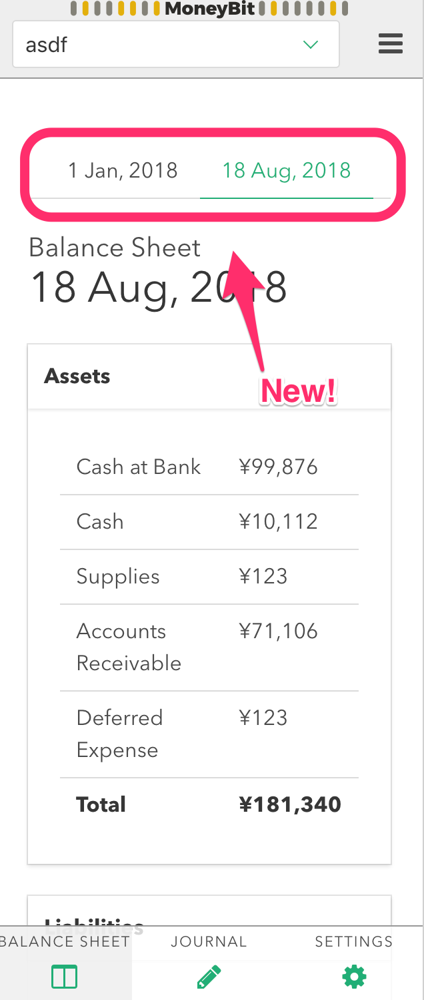

Week 35 - 2018
The weeknote for 8/27 - 9/2.
OSS
ry/deno
-
コントリビュート
- pull #605
- 初めて C++ 側のコードから, V8 API を叩いて, JS の runtime に手を入れるという修正をした. 具体的な内容としては, window.onerror に入っている関数を最終的な uncaught error のハンドリングに内部的に使っていたのを, libdeno.setGlobalErrorHandler という明示的な internal な API 呼び出しで uncaught error をハンドリングできるように書き換えるという内容.
-
今週も deno は活発に開発されて居る状況. Good First Issue をとる newcomer も何人か登場して, contribute してる人の全体を把握するのが難しいくらい contributor が増えた.
-
https の import が出来るようになって, https://unpkg.com から直接依存を落として遊べるようになった (v0.1.2). http(s) import した後の相対パスのハンドリングがバグっているため, まだ jspm.io のリソースを正しく扱うのは無理そう. @mizchi さんの trans-loader で service worker 上で jspm.io のリソースで babel のビルドが成功しているため, もしかしたら上の修正で deno で babel が動くかもしれないという期待が持てる.
MyProject
kt3k/moneybit-app
moneybit は仕訳帳を入力したら貸借対照表 / 月ごとの勘定の内訳等が出力できるモバイルアプリ. (青色確定申告に使えます.)
- 今週はそれほど進捗せず. バランスシートの期初/期末の切り替えをボタンからタブに変更した.

仕事
c3
- c3 のかなり難しいデバッグ案件があった. とある min を 0 に設定しているバーチャートの data でマイナス値が非常に大きくなる (min 0 なので表示されない) と, バーチャートに重ねて表示しているラインチャートが Microsoft のブラウザでのみ巻き込まれて消えるという現象. 問題の状況だと内部的に高さ数千万px 程度の矩形ができていて, そういうサイズの矩形ができると, MS のブラウザだと正常に扱えないようだった (ログに何も出力せず単に path が消えるので, 限りなくバグっぽい挙動に見えた). 見えない範囲の矩形のサイズの問題だったので, 適当に常識的なスケールをかけてあげることで解決できた.
生活
レジュメ
- すごい久しぶりにレジュメを書いた. 疲れた.
- レジュメの html をビルドするのに resume-cli というのを使ったけど, テンプレートが割ときちんと作られていてそこは良かったけど, プロジェクト自体がもうメンテされていないようだったので, 次やるときは別のツールを考えたい.
イベント
DevFest18
- GDG DevFest Tokyo 2018 というイベントに参加した.
- 前半はすべて Flutter の話を聞いた. 後半は ML, golang, Android を一つずつ聞いた. MIU と ZYYX で同僚だったモハメドさんに 5, 6 年ぶりに偶然再会した. 今は mixi のエンジニアをされているとのこと.